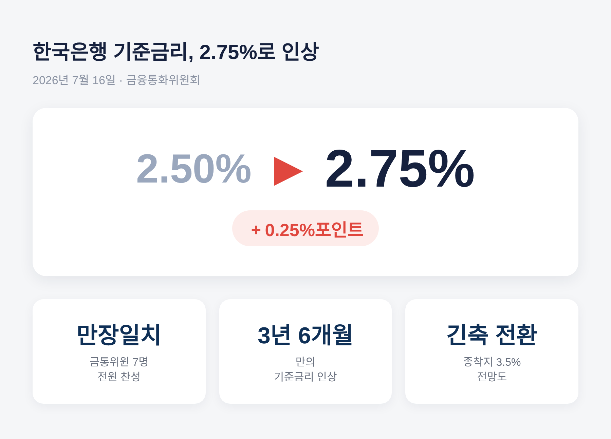
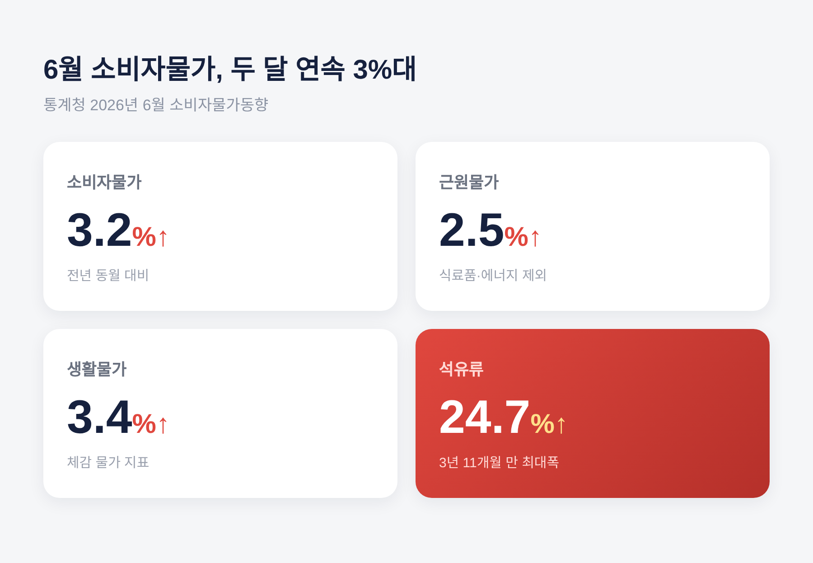
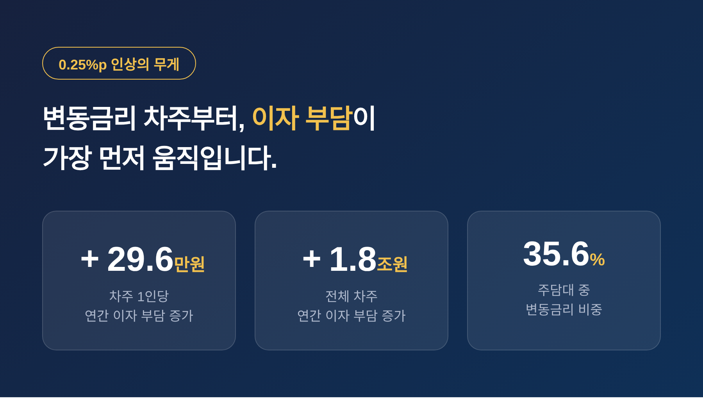
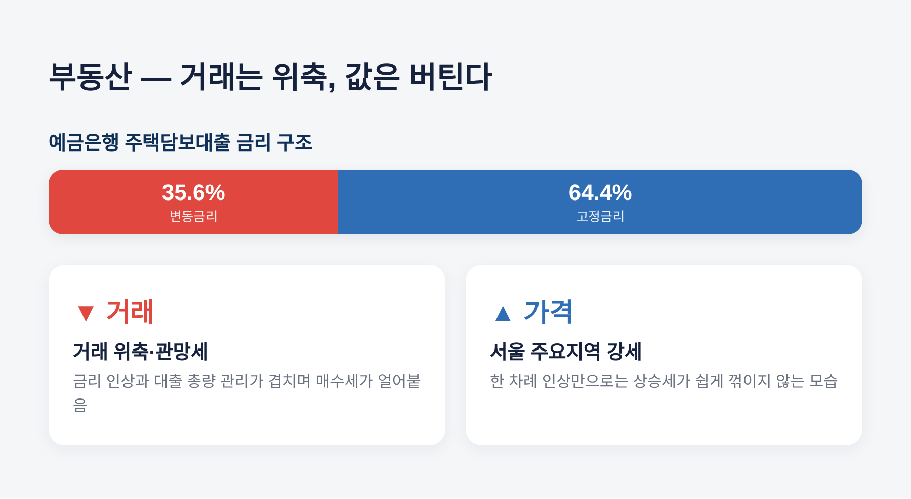
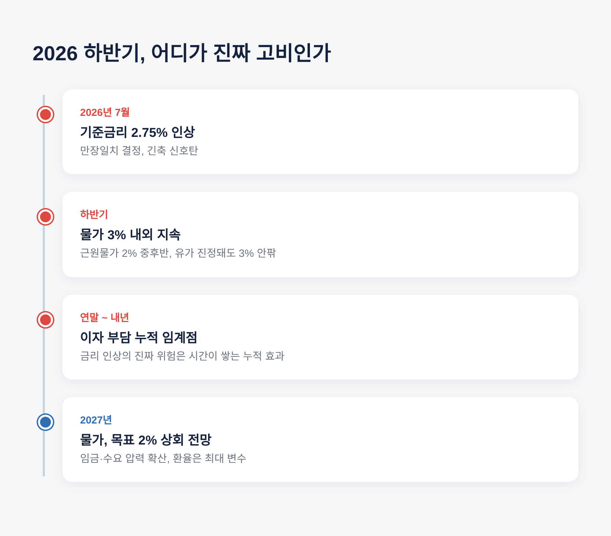

기준금리 인상·물가 3%대 재점화, 가계대출과 집값은 어떻게 바뀌나
3년 반 만의 인상, 무엇이 달라지나
이번 글에서는 3년 반 만에 방향을 튼 한국은행의 기준금리 인상을 정리해 보겠습니다.
2026년 7월 16일, 기준금리가 2.50%에서 2.75%로 올랐습니다. 여기에 6월 소비자물가가 두 달 연속 3%대로 뛰면서, 가계 대출과 부동산, 그리고 우리 소비까지 무엇이 달라지는지를 차분히 짚어봅니다.

무슨 일이 있었나 — 3년 반 만의 인상
핵심부터 말씀드리겠습니다. 한국은행 금융통화위원회는 7월 16일 기준금리를 연 2.50%에서 2.75%로 0.25%포인트 올렸습니다.
주목할 점은 표결이었습니다. 금통위원 7명 전원이 찬성한 만장일치 결정이었습니다.
2023년 1월 이후 3년 6개월 만의 인상이기도 합니다. 그동안 동결과 인하 사이를 오가던 통화정책이 방향을 튼 셈입니다.
만장일치라는 사실은 무게가 다릅니다. 위원들 사이에 이견이 거의 없었다는 뜻이라, 한 번 올리고 마는 조정이 아니라 당분간 긴축 기조가 이어질 수 있다는 신호로 읽힙니다.
일부 전문가는 이번 인상을 긴축의 신호탄으로 보고, 기준금리 종착지를 연 3.5% 수준까지 열어두기도 합니다.

왜 올렸나 — 물가·환율·성장
한국은행이 밝힌 배경은 크게 세 가지입니다. 물가, 성장, 그리고 금융안정입니다.
이 가운데 가장 무거운 것은 물가였습니다.
6월 소비자물가는 1년 전보다 3.2% 올랐습니다. 2023년 12월 이후 가장 큰 폭입니다.
여기에 고환율이 겹쳤습니다. 원달러 환율이 1,400원대에 머물면서, 수입 물가를 밀어 올리는 압력이 이어졌습니다.
성장은 조금 다른 축입니다. 반도체를 앞세운 수출이 성장률을 끌어올리면서, 금리를 감내할 여력이 생겼다는 판단이 깔려 있습니다.
눈여겨볼 대목은 미국과의 엇박자입니다. 미 연준은 금리를 동결한 채 연내 인하 가능성까지 거론하고 있습니다. 한국이 홀로 긴축으로 방향을 튼 셈이라, 한·미 금리 차와 자본 흐름을 둘러싼 셈법도 한층 복잡해졌습니다.
한국은행은 앞으로도 금리 인상 기조를 이어갈 필요가 있다고 밝혔습니다.
물가는 얼마나 올랐나 — 6월 지표 뜯어보기
숫자를 조금 더 자세히 보겠습니다.
6월 소비자물가지수는 119.99로, 전년 동월 대비 3.2% 상승했습니다. 5월에 이어 두 달 연속 3%대입니다.
식료품과 에너지를 뺀 근원물가는 2.5% 올랐습니다. 생활물가지수는 3.4% 상승해, 장바구니에서 느끼는 부담은 더 컸습니다.
상승을 이끈 주범은 기름값이었습니다. 석유류가 24.7% 뛰어, 2022년 7월 이후 3년 11개월 만의 최대 상승폭을 기록했습니다.
경유는 33.7%, 휘발유는 23.1% 올랐습니다. 중동의 긴장이 유가를 자극한 결과입니다.

가계 대출 — 이자 부담이 먼저 움직인다
금리 인상의 파장은 대출에서 가장 먼저 나타납니다.
변동금리로 돈을 빌린 가계와 기업의 이자 부담이 곧바로 늘어나기 때문입니다. 주택담보대출과 신용대출의 상당수가 시장금리에 연동되어 있습니다.
숫자로 보면 이렇습니다. 0.25%포인트 인상이 주담대 금리에 반영될 경우, 차주 1인당 연간 이자 부담은 평균 584만3천원에서 613만9천원으로 늘어납니다. 1년에 약 29만6천원이 더 나가는 셈입니다.
전체 차주로 넓히면 연간 이자 부담 증가액은 약 1조8천억원에 이릅니다.
다만 모두가 같은 강도로 흔들리는 것은 아닙니다. 예금은행 주담대 가운데 변동금리 비중은 35.6%, 고정금리 비중은 64.4%입니다. 코픽스에 연동된 변동금리 차주가 상대적으로 더 민감합니다.
예전에는 저금리가 이런 부담을 가려주었습니다. 지금은 그 완충이 얇아졌습니다.
우려는 취약 차주에게 더 쏠립니다. 여러 곳에서 돈을 빌린 다중채무자나 저신용 차주일수록, 작은 금리 변화에도 상환 여력이 빠르게 흔들립니다. 게다가 이번 인상은 은행채 금리까지 밀어 올렸습니다. 하반기 대출 금리가 본격적인 상승 국면에 들어설 것이라는 전망이 나오는 이유입니다. 6월의 부담이 예고편에 가깝다는 말도 여기서 나옵니다.

부동산 — 거래는 얼어붙고, 값은 버틴다
부동산 시장의 반응은 한 방향이 아닙니다.
금리 인상과 은행권의 가계대출 총량 관리가 동시에 시장을 누르면서, 거래는 위축되고 관망세가 짙어졌습니다.
빌릴 수 있는 돈은 줄고 이자 부담은 커졌습니다. 그런데도 서울 주요 지역의 집값은 쉽게 꺾이지 않고 있습니다.
그 결과 거래는 줄었는데 가격은 강세를 유지하는, 다소 엇갈린 모습이 나타납니다.
전문가들의 시선도 갈립니다. 한 이코노미스트는 금리 인상이 신용대출 수요에는 영향을 주겠지만 주택시장 상승세에 미치는 영향은 제한적일 것으로 봅니다. 반대로 거래절벽이 현실화하고 있다는 진단도 있습니다.
공통점은 하나입니다. 한 차례 인상만으로 시장이 급락하기보다, 거래가 둔화되고 상승세가 다소 꺾이는 수준에 머물 것이라는 관측입니다.

하반기 전망 — 언제가 진짜 고비인가
앞으로가 더 중요합니다.
한국은행은 하반기 소비자물가 상승률을 3% 내외, 근원물가를 2% 중후반으로 내다봅니다. 내년에도 물가가 목표치인 2%를 웃돌 것으로 보고 있습니다.
유가가 진정되어도 하반기 물가는 3% 안팎을 유지할 것이라는 전망입니다. 일부 IT 업종의 임금 인상이 산업 전반으로 번지면, 물가 압력이 더 커질 수 있다는 우려도 있습니다.
금리 인상의 진짜 위험은 한 번의 충격이 아니라 시간이 쌓이는 누적 효과입니다. 부담이 임계점을 넘는 시점은 지금보다 연말이나 내년이 될 가능성이 높다는 지적이 나옵니다.
환율은 변수입니다. 한은의 선제 인상이 유가발 달러 강세를 어느 정도 상쇄했다는 분석이 있지만, 하반기 전망은 연말 1,350원대 안정부터 1,600원 급등 가능성까지 폭넓게 갈립니다. 한국 국채의 세계국채지수 편입에 따른 외국인 자금 유입과 반도체 수출 호조는 원화를 떠받칠 요인으로 꼽힙니다.
정작 조용히 번지는 압력은 내수 쪽입니다. 대출 이자가 무거워지면 소비와 투자 심리는 위축되기 마련입니다. 가계부채와 고금리, 물가 부담이 한꺼번에 겹치면서 하반기 경기가 흔들릴 수 있다는 경계의 목소리가 이어집니다.
한국은행의 고민이 여기에 있습니다. 물가를 잡자니 내수와 가계 이자가 걸리고, 경기를 살리자니 물가와 환율이 걸립니다.

끝으로 한 가지만 덧붙이겠습니다.
이번 인상은 신호탄일 수는 있어도 종착점은 아닙니다. 물가와 성장, 환율이 어느 방향으로 움직이느냐에 따라 다음 카드가 달라질 것입니다.
금리는 한 번에 무너뜨리지 않는다. 천천히, 그러나 확실히 부담을 쌓는다.
지금 대출을 안고 계신다면, 변동과 고정 사이에서 자신의 상환 여력을 다시 점검해 보시길 권합니다. 당장의 0.25%포인트보다, 그 위에 쌓일 다음 몇 번을 함께 헤아리는 편이 좋겠습니다.
참고 소스
- 이투데이 「한은 금통위, 기준금리 2.75%로 상향」 (2026-07-16)
- 통계청 6월 소비자물가동향 / 뉴스핌·헤럴드경제·아주경제 (2026-07-02)
- 글로벌이코노믹·헤럴드경제 「0.25%p 인상, 가계 이자 부담 1.8조↑」 (2026-07-16)
- 파이낸셜뉴스 「한은, 하반기 물가 3% 안팎…내년에도 2% 웃돌듯」 (2026-06-17)
- 세계일보·뉴데일리 「3년6개월 만 금리 인상, 부동산 관망」 (2026-07-16~19)